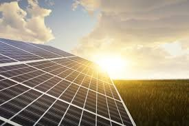
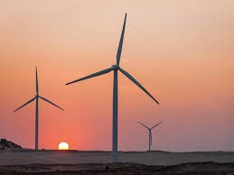
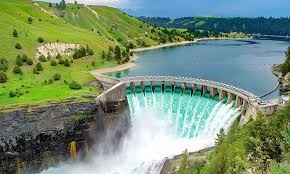
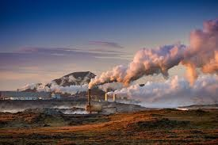

Energía solar
La energía solar es la segunda fuente renovable más utilizada en el mundo. Incluye tecnologías como la fotovoltaica, térmica y sistemas de calefacción o refrigeración solar.

La energía solar es la segunda fuente renovable más utilizada en el mundo. Incluye tecnologías como la fotovoltaica, térmica y sistemas de calefacción o refrigeración solar.

La energía eólica, generada a partir del viento, es la tercera fuente renovable más utilizada en el mundo. En 2021, había 825 GW de potencia instalada a nivel global, con Europa concentrando más de una cuarta parte (236 GW). Se espera que allí se añadan al menos 100 GW más en los próximos años.

La energía hidráulica es la fuente renovable más utilizada en el mundo, principalmente porque se ha aprovechado durante más de un siglo para generar electricidad. Actualmente hay 1.230 GW de potencia instalada en el mundo, con una producción de 4.327 TWh en 2021. Los mayores productores son China, Brasil y Canadá, aunque han enfrentado caídas en generación por sequías.

La energía geotérmica es una fuente renovable que aprovecha el calor del interior de la Tierra. Este calor se encuentra en depósitos de agua subterráneos, y según su temperatura, puede usarse de diferentes maneras. Cuando la temperatura es menor a 150 °C, se utiliza principalmente para calefacción y agua caliente. Si supera los 150 °C, se aprovecha para generar electricidad mediante vapor a alta presión.
La biomasa es una de las formas más antiguas de energía utilizadas por el ser humano, inicialmente en forma de fuego para cocinar y calentarse. Hoy en día, se genera a partir de materiales orgánicos como madera, carbón vegetal y estiércol, y se usa para producir calor, electricidad y biocombustibles líquidos.